无时钟的一致性：FaunaDB的分布式事务协议
FaunaDB是一个分布式数据库平台支持串行化，外部一致性（也称之为严格的可串行化）事务。跟Spanner或者类似系统不一样的是，FaunaDB不依赖物理时钟同步来维持一致性。跟Percolator，FoundationDB类似的系统不一样的是，FaunaDB对副本距离没有限制，并且可以在全球互联延迟的环境下部署。
本文描述如何实现读写和只读事务。我们从背景开始解释核心协议如何维护地理距离分布的一致性。然后，我们讨论FaunaDB架构对性能影响。
背景
FaunaDB更具体地说是一个关系NoSQL数据库平台。术语“NoSQL”仅指接口；FaunaDB目前支持执行透明的过程接口，而不是声明式的SQL。
术语关系型指的是数据模型，但是除了关系模型外，FaunaDB还支持图和文档模型。它还指RDBMS的常用保证：
- ACID事务，支持串行化隔离级别。
- 副本间的线性化一致性。
与传统的RDBMS不同，FaunaDB即使在地理上分布也能保持这些保证。
串行化隔离
串行化隔离级别的含义是系统可以同时处理很多事务，但是最终的结果跟一个接一个处理的结果一样。对于许多数据库系统，顺序不是提前确定的，相反，事务在同时执行，并且通过锁用于确保最终结果等效于某种串行顺序。
FaunaDB的预处理
FaunaDB的协议，受Calvin的启发，在执行对数据库的任何写入之前决定此序列顺序。对于每一批并行读写事务，它们被插入到分布式的预写事务日志中，并且FaunaDB执行引擎确保处理这批事务的最终结果等同于它们按照在此预处理中出现的顺序逐个处理生成的日志。
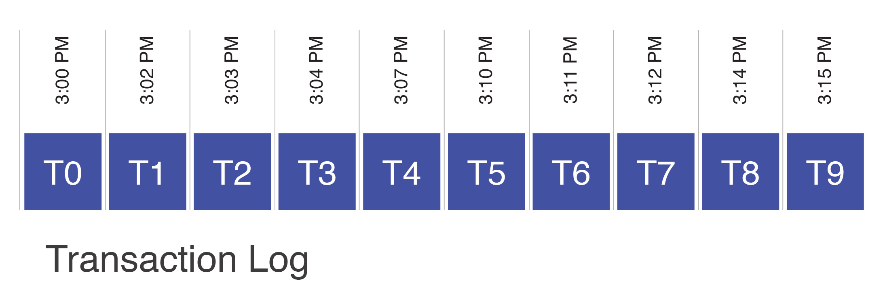
“FaunaDB时间”与真实时间之间的粗略对应仅仅是开发人员的负担，而不是操作约束。相反，“之前”和“之后”的概念完全取决于事务在分布式日志中出现的顺序。
FaunaDB可以从分布式日志中的任何点获取“快照”，其中包括在该点之前出现在日志中的所有事务的写入，并且在此之后的不会包含。例如，T4处的快照将包含事务T0-T4，但之后的事务不会包含。
为了在日志中的任意点快速生成快照，FaunaDB会保留每个记录的多个版本。每个版本都使用时间戳进行标记 —— 事务日志中的事务标识符——编写版本信息：
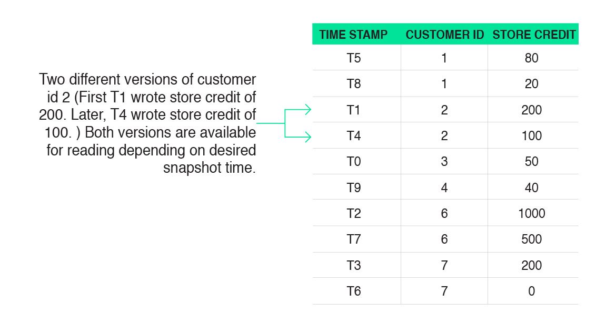
要读取日志中特定事务的快照，例如T3，读取早于或等于T3的每个记录的最新版本。在与上面的客户2相关联的记录的示例中，有两个可能的版本要读：一个写在T1，另一个写在T4。由于T1是这两个小于或等于T3的选项中的最新一个，因此该记录是本例中读取的记录。
FaunaDB是一个可扩展的系统，它可以在多个节点上划分大型表。例如，假设我们正在部署一个带有两个关系表的零售应用程序：“customer”表（如上所示），表示所有客户的客户ID和信用积分，以及显示价格的“widget”表。该应用程序销售的每个小部件以及库存中剩余的小部件数量。这两个表可以在任意数量的节点上进行水平分区，如下所示：
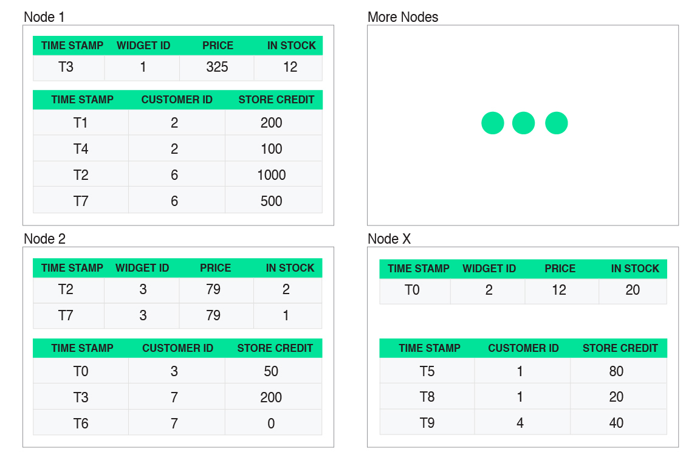
FaunaDB还可以在很长的地理距离内复制数据：
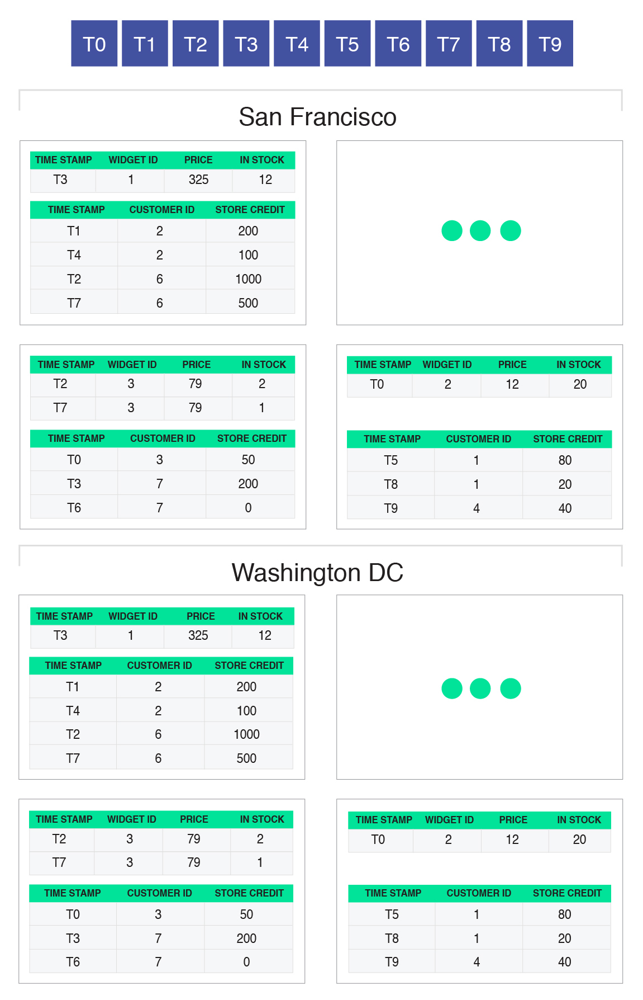
客户端可以将事务发送到任何副本 —— 包括只读事务和更新数据库中数据的事务。但是，整个FaunaDB部署只有一个事务日志。副本必须就如何将新事务插入日志达成共识。FaunaDB使用优化的Raft实现来达成共识。
总结
在FaunaDB中，数据在机器之间进行分区和复制。每个分区包含多个记录（行），每个记录可能有许多与之关联的版本。每个版本都单独存储，并使用编写该版本的事务标识符进行标记。当FaunaDB事务需要读取数据时，它会选择快照并根据选择的快照读取正确的版本。
FaunaDB的分布式事务协议
我们现在将描述核心FaunaDB事务协议。我们将通过一个示例来解释它，通过跟踪提交给系统的几个示例事务的生命周期。让我们继续使用上面讨论的相同示例应用程序：具有两个表的零售应用程序—— 一个表提供有关正在销售的小部件的信息，另一个表提供有关客户的信息以及他们拥有多少商店信用。
让我们来看一个特定的例子，其中有一个小部件被售出，其中只剩下一个（小部件3）。让我们假设两个客户几乎同时尝试购买它。此外，我们假设这两个客户正在与数据的不同副本进行交互 —— 一个客户在旧金山使用副本，另一个客户在华盛顿特区使用副本。
换句话说，以下事务将提交给旧金山的副本：
事务伪代码：
- 读取小部件3，确认在商店中至少有一个，检查当前价格
- 读取客户2，确认客户有足够的商店信用购买小部件3
- 从商店中将将小部件3减去
- 将客户2的信用中减去小部件的价格
并且在华盛顿特区向副本提交了一个非常类似的事务（唯一的区别是不同的客户试图购买相同的小部件）：
事务伪代码：
- 读取小部件3，确认在商店中至少有一个，检查当前价格
- 读取客户6，确认客户有足够的商店信用购买小部件3
- 从商店中将将小部件3减去
- 将客户6的信用中减去小部件的价格
接收事务请求的副本中的服务器成为该请求的“协调者”。在下图中，我们看到两个事务（我们上面给出了伪代码）分别到达旧金山和华盛顿特区的特定机器。那些机器成为这两个事务的协调者。
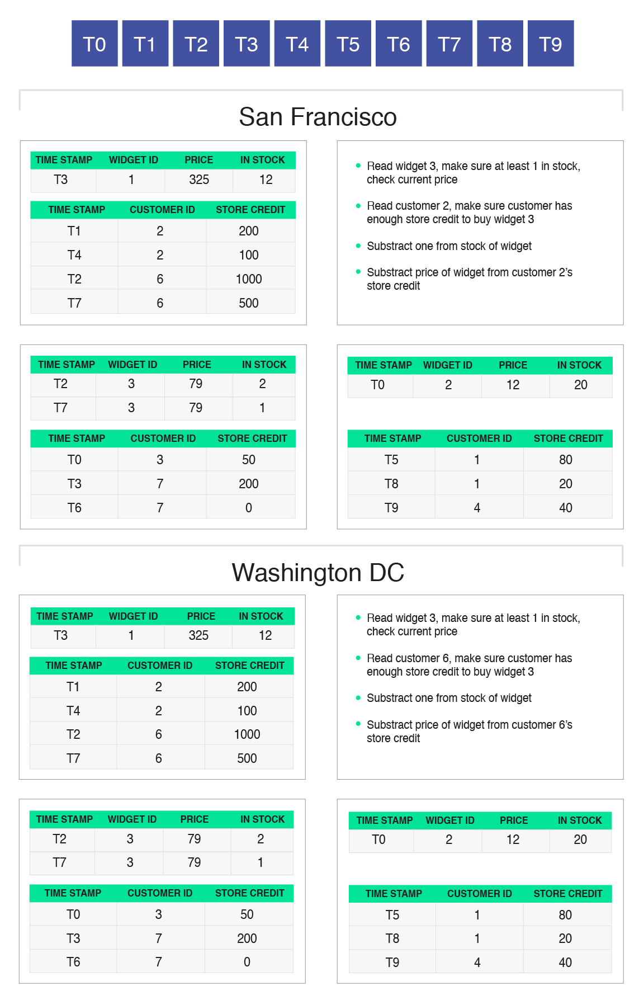
协调者执行事务代码。大部分场景下，
在大多数情况下，它不会在本地拥有所有相关数据，因此必须从同一副本中的附近服务器读取数据，这些服务器具有事务请求中涉及的所需数据分区。它选择最近的快照时间（此选择可以是任意的），并向附近的服务器发出请求以读取该快照的数据。在我们的示例中，假设我们两个竞争事务中的每个事务的协调器选择从T9开始读取（分布式事务日志中的最新事务）：
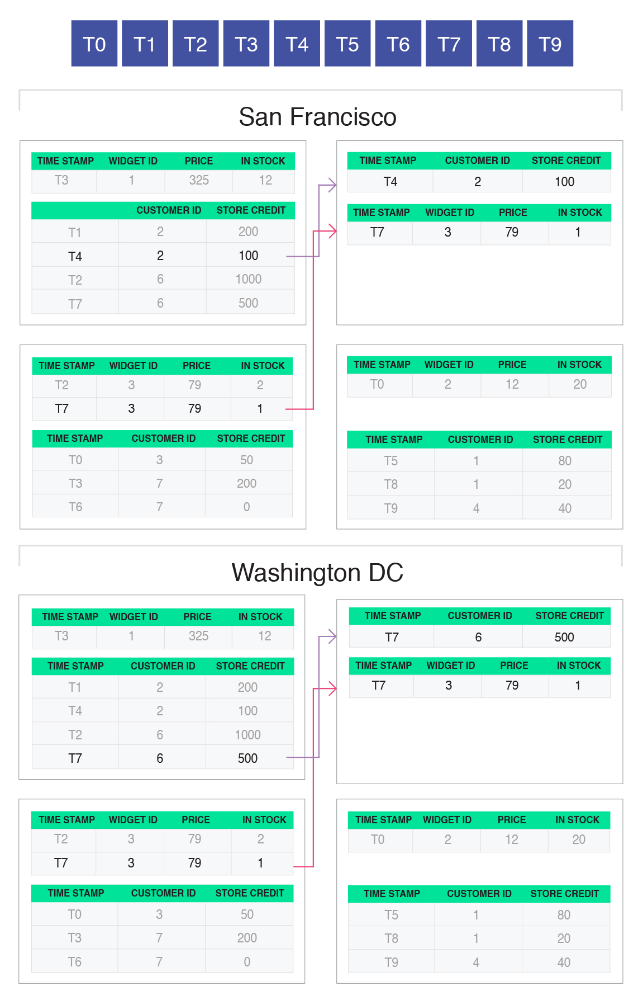
在旧金山运行的事务是针对客户2试图购买小部件3.因此，协调器从快照T9读取两个相关记录（对于客户2和小部件3）。在华盛顿特区运行的事务是针对客户6试图购买小部件3.因此，协调器从快照T9读取两个相关记录（对于客户6和小部件3）。上图显示了从存储到协调器的计算机发送的记录的正确版本。
回想一下，我们的示例事务执行一些检查，如果它们成功，则事务继续更新数据（特别是减少小部件的库存和购小部件的客户的商店信用）。协调者尚未执行这些写操作。相反，它只是在本地缓存它们，记录它想要写的记录以及新值应该是什么：
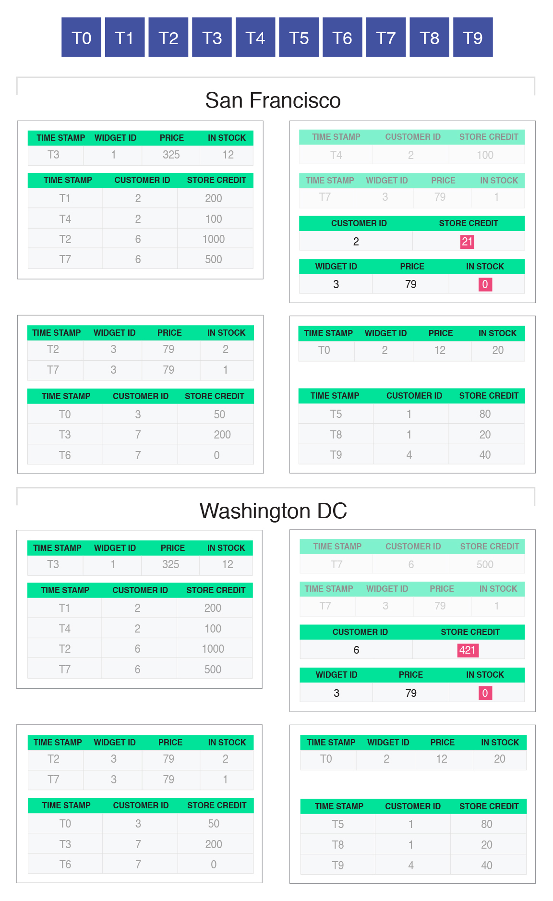
在完成所有事务逻辑并缓冲所有写入之后，协调器现在准备好启动提交过程。为此，协调器尝试将此事务插入到分布式日志中（为了实现可伸缩性，此插入过程批量进行，并且日志本身被复制和分区）。Raft协议确保所有副本在将批量事务（来自任何副本）插入分布式日志的顺序上达成共识。插入日志后，该事务在分布式日志中的相对位置成为事务标识符。实际的日志条目包含新确定的标识符，以及该事务的协调器执行的所有读取和缓冲写入的记录：
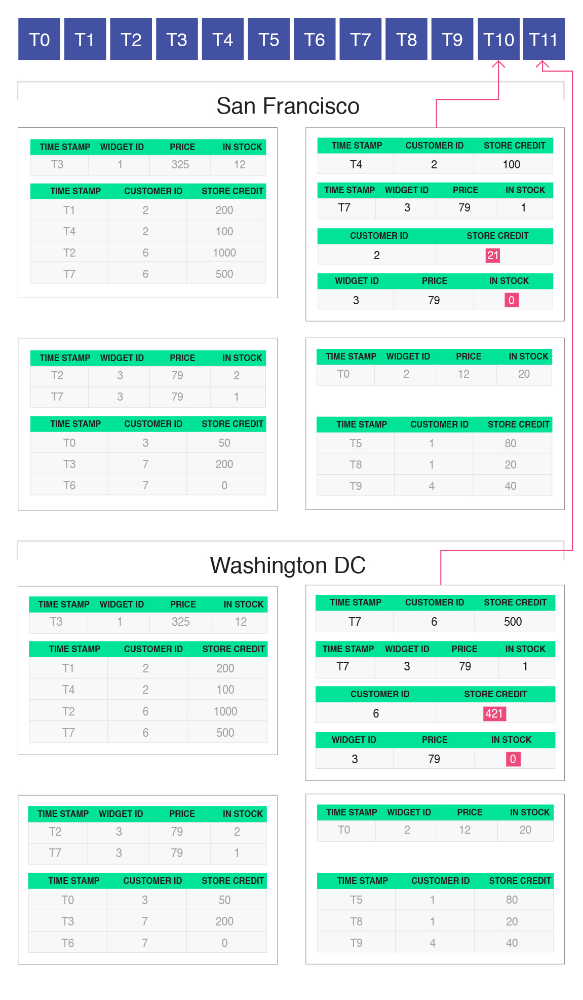
在我们的示例中，提交给旧金山的事务首先被插入到日志中（标识符为T10，第二个提交给华盛顿特区，标识符为T11）。每个事务的读写都是如此。当这两个事务被附加到分布式日志中时，两个事务（在红色矩形内显示）包含在日志条目中。
将事务插入到分布式事务日志中是FaunaDB协议中唯一需要跨副本达成共识的部分。这是FaunaDB的一个显着特征 —— 其他地理复制系统至少需要两轮全球共识。
每个副本独立地从分布式事务日志中读取并尝试提交日志中的每个事务。请注意，每个日志条目都包含最初处理该事务的协调者执行的所有读取和写入操作。此外，请注意，协调器选择了一个快照，在该快照中，在将事务插入分布式日志并接收分布式事务标识符之前执行读取。
为了正确保证全局可串行化，执行该事务读取的正确快照是该事务在分布式日志中的位置。因此，协调器执行读取的快照早于保证全局可串行化的正确快照。为了防止可串行性违规，每个副本必须再次执行读取，以查看最初读取它们的快照与分布式日志中事务标识符之间的正确快照之间的值是否已更改：
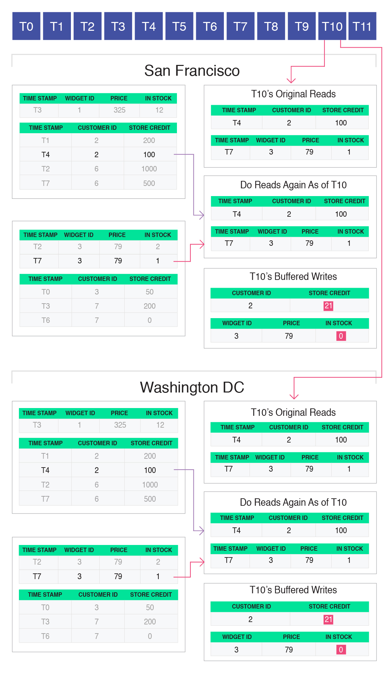
在T10的情况下，最初的读取与当前快照读取相同。所以事务可以提交。
请注意，副本彼此独立地执行此检查，从其本地数据副本读取。关于读取是否改变，他们总会得出相同的结论。这是因为每个副本都看到相同的分布式事务日志，因此将始终就日志中特定点的快照值达成一致。
如果读取与原始快照的读取相比没有变化，则事务可以提交。要提交事务，缓冲的写入将附加到核心表，并使用为该事务指定的事务标识符进行标记。在上图中，新版本的客户2和小部件3分别显示为插入到正确的客户和小部件分区中，并使用T10（编写此新版本的事务）进行标记。
在T11的情况下，原始读取与正确快照的读取不同：
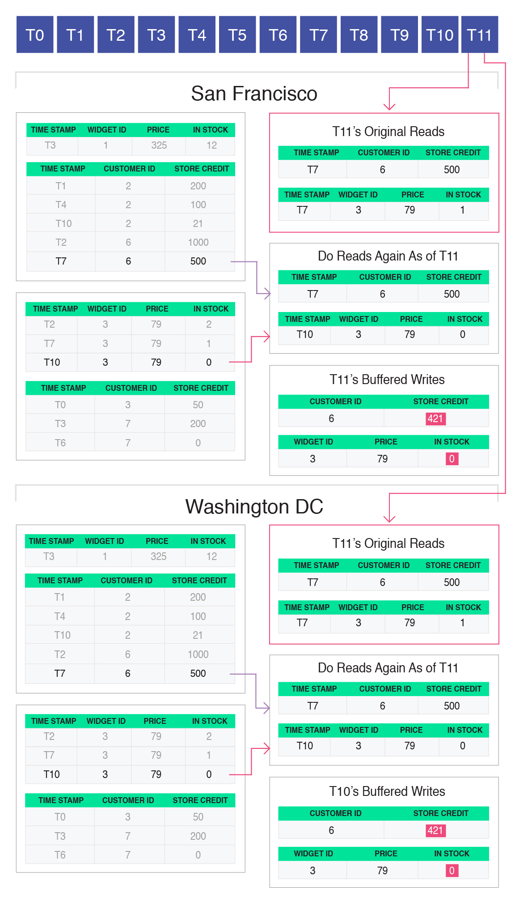
这是因为原始读取是从快照T9开始执行的，但是T10在分布式日志中的T11之前出现，这更新了T11读取的数据（小部件3）。因此，协调器执行的小部件3的原始读取不正确，并且需要中止并重新启动事务：
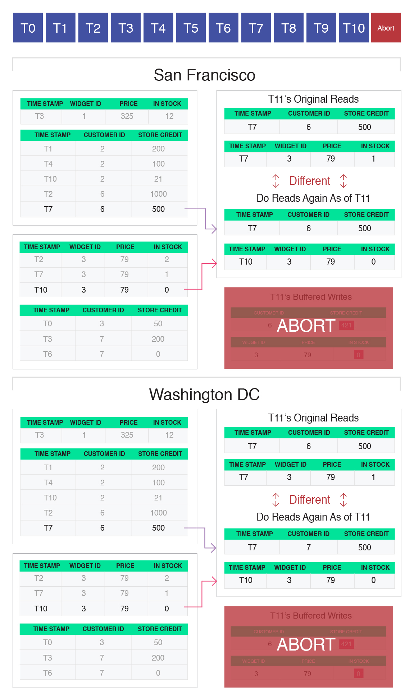
每个副本将独立地确定原始读取是不正确的，因此独立决定中止事务，而不需要任何进一步的协调。当使用正确的读取集重新启动T11时，它将看到小部件3的库存为0，因此将正确地通知客户6购买无法继续。
多区域的一致性
上一节中我们示例的最终结果是，当两个客户同时尝试购买库存中的最后一项时，FaunaDB能够正确确保这些购买中只有一个成功。即使尝试购买相同项的两个客户将他们各自的事务提交到数据库的不同副本，并且即使这些区域在地理上彼此远离，也是如此。
这种防止重复购买的能力源于FaunaDB的一致性保证：一旦事务提交，保证任何后续的读写事务 - 无论哪个副本正在处理它 —— 都将读取先前事务写入的所有数据。其他NoSQL系统，甚至大多数SQL系统，都无法保证全局副本的一致性。它们允许副本暂时分叉，并且事务的结果可能会根据发送到的副本而有所不同。
例如，在最终一致的数据库系统中，提交给旧金山副本的事务和提交给华盛顿特区副本的事务可以在各自的数据中心继续进行并提交，从而可能允许多个客户相信他们购买了库存中的最后一件商品。只有在副本最终变得一致之后，系统才会发现同一个项目被出售两次。
相比之下，FaunaDB通过按照它们在全局输入日志中出现的顺序对事务进行确定性处理来保证全局一致性。每个读写事务，无论它来自何处，都被写入输入事务的相同日志，其中该日志中的事务顺序通过Raft共识协议达成一致。此日志中的事务顺序表示每个副本强制执行的全局操作的线性顺序，并确保副本保持一致。
总结
为了总结整个FaunaDB协议，每个读写事务分三个阶段进行：
- 第一阶段是推测阶段，其中从最近的快照执行读取，并且写入被缓冲。
- 接下来，使用共识协议（Raft）将事务插入到分布式日志中，事务接收全局事务标识符，该标识符指定其相对于系统正在处理的所有其他事务的等效序列顺序。这是需要全球共识的唯一点。
- 最后，在每个副本中开始检查，以验证推测性工作。如果该推测性工作没有导致可能违反可串行化保证，则工作将成为永久性工作，并将缓冲的写入写回数据库。否则，中止并重新启动事务。
性能影响
在FaunaDB中，即使是最复杂的事务，也只需要一轮全球共识。此外，共识协议仅用于将事务插入分布式日志中。对于协议的每个其他部分，副本可以完全独立地进行。例如，可以在没有任何共识的情况下执行可串行化的读取。这会带来几个重要的性能影响：
- 更新数据的事务仅通过一轮全球共识。大多数其他一致的数据库系统至少需要两轮共识。当数据在地理上分散时，共识可能是事务中的主要成本。在这种情况下，FaunaDB大约是需要两轮共识的其他数据库系统的延迟的一半。
- FaunaDB不需要时钟同步或限制部署中机器之间的时钟偏差不确定性。因此，FaunaDB的体系结构不会遇到因时钟偏差不确定性而延迟事务的延迟成本，这是许多其他一致数据库系统中存在的成本。其他系统也会受到去同步化的影响，因为操作员无法将时钟偏差保持在边界内，因此一致性保证可能没有检测。
- 通过使用单个分布式日志，FaunaDB具有“FaunaDB时间”的全局概念，该概念由系统中的每个节点商定。FaunaDB中的“时间戳”是一个逻辑概念，只是分布式日志中的位置。因此，任何节点在特定快照上及时提供数据都是微不足道的。快照是分布式日志中事务之间的特定点，并且在此快照中提供数据的节点只需确保快照包含日志中此位置之前的事务的所有修改，而不是通过以下任何修改：此后的事务。因此，处理了足够的日志前缀的任何副本都可以在该时间点提供快照读取。
- 最后，通过运行事务上完整的读快照，可以保证只读事务在FaunaDB中可串行化。FaunaDB支持可串行化的快照读取，没有共识或锁定，因此它们完成了本地数据中心延迟。
结论
FaunaDB是一种优雅的纯软件解决方案，用于实现全局ACID事务，完全保证可串行化和一致性。FaunaDB不需要时钟同步，不需要专门的硬件，也不需要原子钟。
FaunaDB事务协议的优点在于它的简单性。FaunaDB独特的设计实现了许多性能提升，使其能够提供可串行化化和一致性系统的可用性优势，同时接近未能提供这些强有力保证的系统的性能。例如，可串行化读取具有与Apache Cassandra等最终一致系统相同的可伸缩性，吞吐量和延迟，并且可以独立于写入进行扩展。
世界上没有像FaunaDB这样的其他公开系统。我们鼓励您尝试一下，并考虑类似技术对您自己的工程工作的影响。
原文：https://fauna.com/blog/consistency-without-clocks-faunadb-transaction-protocol
翻译：王世德